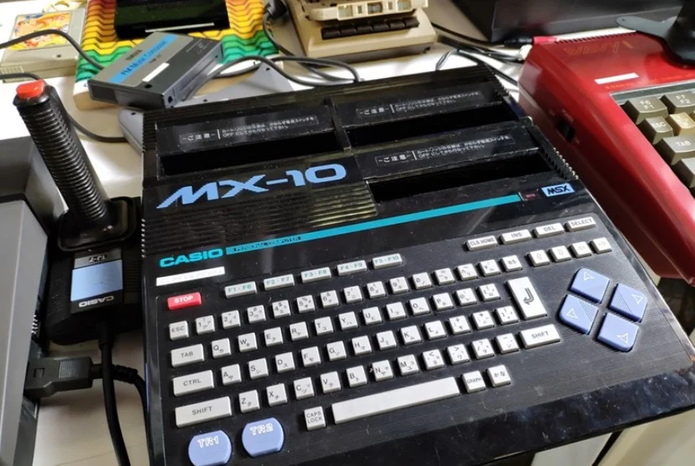
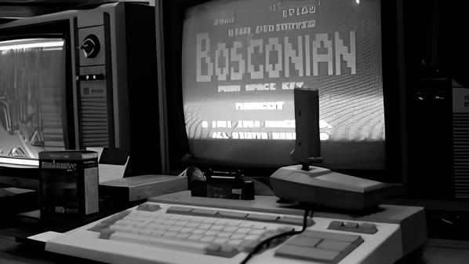
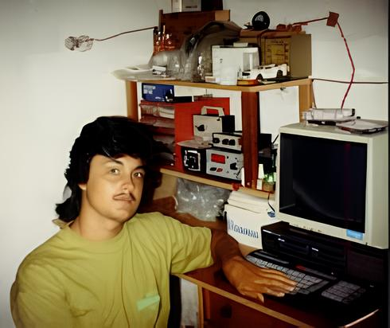
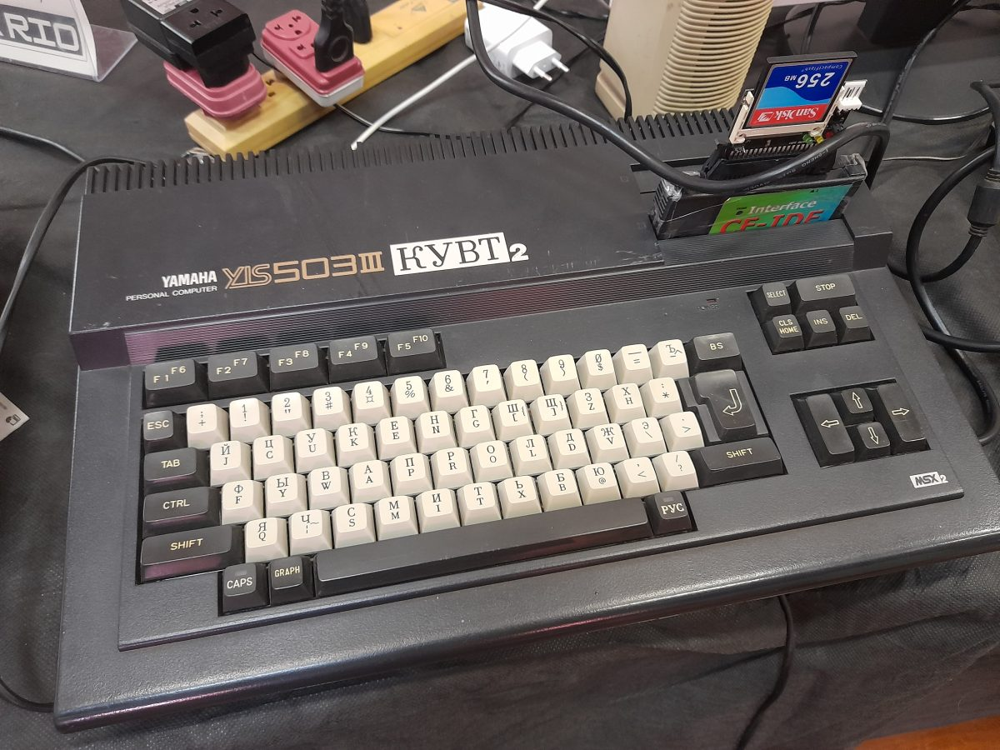
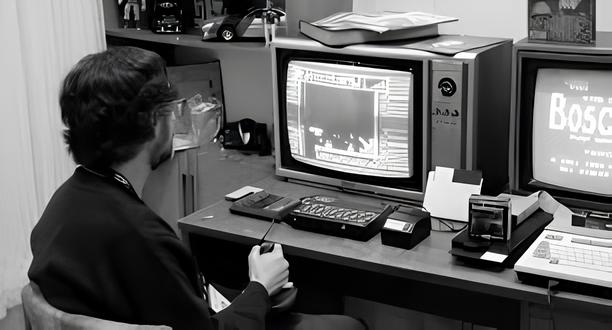
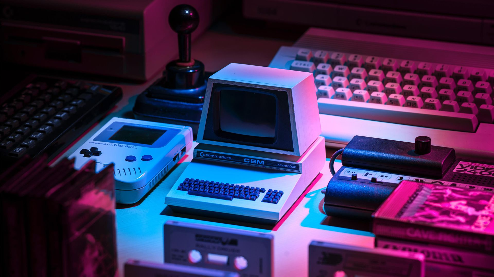

Sobre
Mais do que um padrão técnico passageiro, o MSX se ergue como um farol eterno na paisagem da computação doméstica, um ecossistema visionário que uniu gigantes da eletrônica em uma sinfonia de compatibilidade e criatividade, transformando máquinas isoladas em portais acessíveis para mundos digitais. Anunciado em 16 de junho de 1983 pela ASCII Corporation sob a liderança de Kazuhiko Nishi, em parceria inicial com a Microsoft de Bill Gates, o MSX surgiu como resposta ao caos de plataformas fragmentadas no Japão, baseado no processador Zilog Z80A a 3.58 MHz, 32KB de RAM mínima, Microsoft BASIC e suporte a cartuchos, fitas cassete e periféricos como joysticks e impressoras. Fabricantes como Philips, Sony, Yamaha, NEC, Canon e até Sanyo aderiram ao padrão, produzindo milhões de unidades que venderam especialmente no Japão (cerca de 2 milhões só no primeiro ano), Europa e Brasil, onde se tornou ícone cultural nos anos 1980 com títulos lendários como Metal Gear Solid (origens), Gradius, Konami's Penguin Adventure e Parodius. Sua gênese rompeu paradigmas ao democratizar hardware e software, permitindo que desenvolvedores independentes e estúdios criassem bibliotecas vastas de mais de 15 mil softwares, fomentando não só jogos, mas ferramentas educacionais, editores de música e programação que inspiraram gerações a codificar suas próprias aventuras. A era inaugural do MSX1 plantou as sementes de uma revolução, com gráficos de 16 cores via Texas Instruments TMS9918A, som beep básico e slots expansíveis que convidavam experimentação, tornando-o o coração das salas de aula e lares humildes onde crianças desbravavam pixels pela primeira vez. Evoluindo para o MSX2 em 1985, equipado com o chip gráfico Yamaha V9938 (512 cores, modos 256x212 de alta resolução), som FM de 9 canais via YM2149 e suporte nativo a disquetes de 3.5", ele transcendeu o entretenimento para se tornar um ateliê digital profissional, atraindo homebrewers e cenas underground com demos técnicas impressionantes. O MSX2+ de 1988 elevou ainda mais com V9958 para sprites avançados e até 64KB VRAM, enquanto o ápice chegou em 1990 com o MSX turbo R: processador R800 de 16 bits (compatível Z80) a 7.16 MHz, até 4MB RAM, SCSI integrado em alguns modelos e MSX-Music/Midi para áudio orquestral, desafiando rivais como NES e PC Engine com ports exclusivos como SD Snatcher.Diante de turbulências como o rompimento amargo entre Nishi e Gates em 1986 — motivado por dívidas alegadas de US$500 mil e extravagâncias como um dinossauro mecânico de US$1 milhão —, a Microsoft abandonou o projeto, mas a ASCII e a MSX Association, presidida por Nishi até hoje, mantiveram o legado vivo com resiliência admirável. Essa terceira fase forjou comunidades globais, com torneios no Brasil (onde eventos recentes em 2025 reuniram lendas como Nishi em São Paulo) e cenas de preservação via emuladores como openMSX, enquanto o declínio comercial nos anos 1990 ante PCs IBM não apagou seu brilho cultural. Iniciativas revival como MSX Pen de Philips, cartridges flash e homebrew no MSXdev perpetuaram o espírito, provando que o padrão não era refém de hardware obsoleto, mas de uma filosofia de abertura que inspirou padrões futuros como o Amiga e até influências no Game Boy. O quarto capítulo simboliza um renascimento triunfante, com Nishi à frente de projetos como o MSX3 anunciado em entrevistas recentes, utilizando FPGA para recriar o turbo R com conectividade moderna, Wi-Fi e suporte a periféricos USB, conectando o analógico ao digital contemporâneo. Hoje, em 2025, mesmo após desafios pessoais de Nishi como falência resolvida em abril (dívida de 11,5 bilhões de ienes quitada), o MSX pulsa em eventos internacionais, colecionadores e transmídia: sagas Konami adaptadas em mangás, preservação via WOZ files e comunidades no Brasil que o elegeram patrimônio cultural. Seus universos não vendem nostalgia vazia, mas a promessa de imersão eterna, onde o código de ontem impulsiona criações de amanhã, dissolvendo fronteiras entre gerações e realidades.
Fotos Marcantes







Kazuhiko Nishi
Kazuhiko Nishi é reconhecido não apenas como um pioneiro da informática pessoal, mas também como o visionário responsável pela criação do padrão MSX, que consolidou uma nova era de compatibilidade e acessibilidade no mundo dos computadores domésticos. Nascido em Tóquio, sua formação em Engenharia Eletrônica e sua paixão por tecnologia foram o alicerce para uma carreira marcada por inovação e liderança técnica. Ingressando na indústria de eletrônicos na década de 1970, Nishi rapidamente destacou-se por sua habilidade incomum de unir conceitos complexos de hardware e software, promovendo um ecossistema integrado que facilitava o desenvolvimento e a democratização do acesso a computadores pessoais.Sua mente arrojada e seu compromisso com a padronização tecnológica levaram-no a idealizar o MSX, um sistema aberto que visava unificar diferentes fabricantes em torno de uma arquitetura comum, permitindo a produção de máquinas compatíveis e acessíveis globalmente. Essa iniciativa foi revolucionária ao estabelecer um padrão que impulsionou o crescimento da computação doméstica no Japão e em outros países, tornando o MSX uma plataforma icônica nos anos 1980. Através dessa realização, Nishi não apenas antecipou a importância da interoperabilidade, mas também definiu uma nova fronteira para o entretenimento e o uso educacional da tecnologia, lançando as bases para a popularização dos videogames e dos computadores pessoais em larga escala.